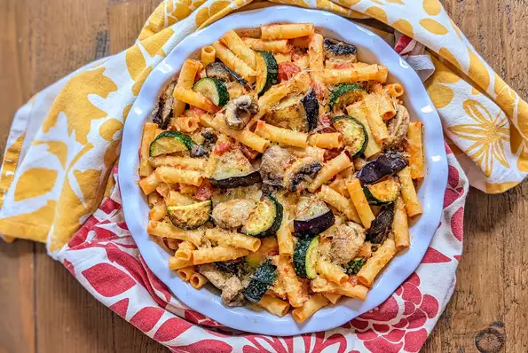

Description

This zucchini, eggplant, and mushroom pasta is a wonderful tribute to Italian cuisine.
Ingredients:
- 1 eggplant, diced into 1/2-inch squares
- 2 tablespoons extra-virgin olive oil, divided
- 1 tablespoon butter
- 1 zucchini, diced
- 2 cloves garlic, chopped
- 4 mushrooms, chopped
- 1 onion, chopped
Steps:
- Bring a saucepan of water to a boil. Cook eggplant in the boiling water until mostly tender, about 8 minutes. Drain.
- Heat 1 tablespoon olive oil and butter in a skillet over medium-high heat. Saute zucchini and garlic until zucchini starts to soften, about 5 minutes. Add mushrooms; cook until beginning to brown, about 3 minutes. Add eggplant; saute until browned, about 2 minutes.
- Heat remaining olive oil in another saucepan over medium-high heat. Saute onion until golden, about 4 minutes. Add tomato sauce, diced tomato, basil, marjoram, salt, and pepper. Reduce heat to medium-low and bring sauce to just a boil.
- Pour wine into the zucchini mixture; reduce heat and simmer until liquid is nearly gone, about 6 minutes. Add the tomato sauce; mix well.
- Preheat the oven to 350 degrees F (175 degrees C).
- Bring a large pot of lightly salted water to a boil. Cook farfalle pasta at a boil, stirring occasionally, until tender yet firm to the bite, about 12 minutes. Drain.
- Pour a thin layer of sauce into the bottom of a lasagna dish. Add a portion of the 1 3/4 cups plus 2 tablespoons Parmesan cheese and mozzarella strips. Add a layer of pasta. Repeat layers, ending with cheeses.
- Bake in the preheated oven until cheese is well melted, about 20 minutes.